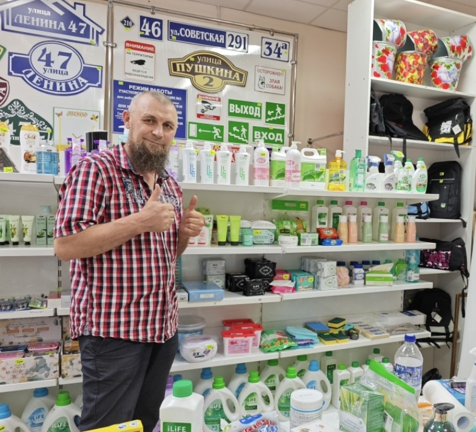

Независимый партнёр Greenleaf · Илдус Янбухтин
Подбор эко-средств Greenleaf для дома и семьи
Помогу выбрать 2–3 средства под вашу задачу: разберём назначение, состав и ориентировочную стоимость. Без навязывания лишних покупок.

Консультация бесплатна · Покупать не обязательно · Состав указан на упаковке
Принцип работы
Сначала задача, потом рекомендация
В каталоге много позиций, но для быта и ухода обычно хватает нескольких базовых средств с понятным составом и разумным расходом.
Если позиция не подходит под ваш запрос или бюджет, я прямо скажу об этом и предложу альтернативу.
Ассортимент
Основные направления
Подбираю решения под конкретный запрос: от уборки дома до повседневного ухода.
Для дома
Уборка, стирка и посуда
Гели и порошки для стирки, средства для мытья посуды, овощей и фруктов, очистители для кухни и ванной. Подбираем по запаху, формату концентрата и расходу.
Уход за собой
Кожа, волосы и гигиена
Средства для лица, тела, волос и гигиены на мягких моющих основах. Подбор с учётом типа кожи. Если есть аллергия или чувствительность, сначала изучите состав и посоветуйтесь с врачом.
Чаи и уходовые серии
Напитки и уход
Травяные чаи, тканевые маски и базовые уходовые наборы. Это продукты для ухода и повседневного удовольствия, а не лекарства: они не лечат и не заменяют медицинскую помощь.
Подход
Почему я выбираю эко-средства
Для меня «эко» — это критерий отбора: что каждый день контактирует с кожей, посудой и воздухом в доме.
Понятный состав
В основе растительные мягкие моющие вещества, без агрессивного хлора. Точный состав каждой позиции смотрите на упаковке или в описании продукта.
Концентраты
Многие средства для дома продаются в виде концентратов. Одного флакона обычно хватает надолго, а упаковки меньше.
Осознанный выбор
Советую покупать то, что нужно именно вам, а не набирать всё подряд. Меньше импульсивных покупок — меньше лишних флаконов.
«Эко» здесь — мой личный критерий отбора, а не отдельная сертификация каждой позиции каталога.
Процесс
Как проходит бесплатная консультация
Без долгих презентаций и обязательных стартовых пакетов. Обычно хватает 5–10 минут переписки.
-
Опишите задачу
Напишите, что ищете: например, средство для стирки детского белья, мягкий шампунь или замену бытовой химии на кухне.
-
Получите 2–3 варианта
Подберу позиции из каталога Greenleaf и коротко расскажу о составе, расходе и ориентировочной стоимости.
-
Решаете сами
Если варианты подходят, подскажу, как оформить заказ. Если нет, просто останемся на связи. Давления не будет.
Связаться
Напишите, подберём решение под ваш запрос
Выберите удобный канал связи. Для краткого гида и подбора в Telegram напишите кодовое слово ЭКО боту.
Telegram-бот @greenleaf_my_pk1_bot Напишите слово «ЭКО», чтобы получить гид и контакты WhatsApp +7 987 143-89-93 Личная переписка Страница ВКонтакте Сообщения и вопросы Чат в Max «Лаборатория отзывов» Отзывы участников. Это личный опыт, а не гарантия результата